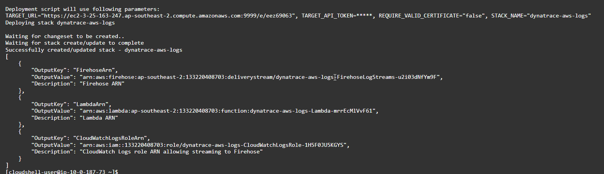
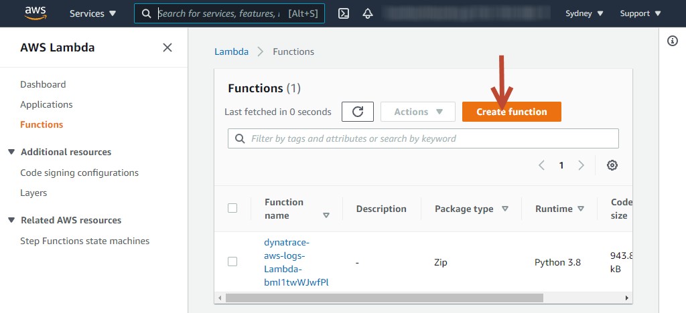
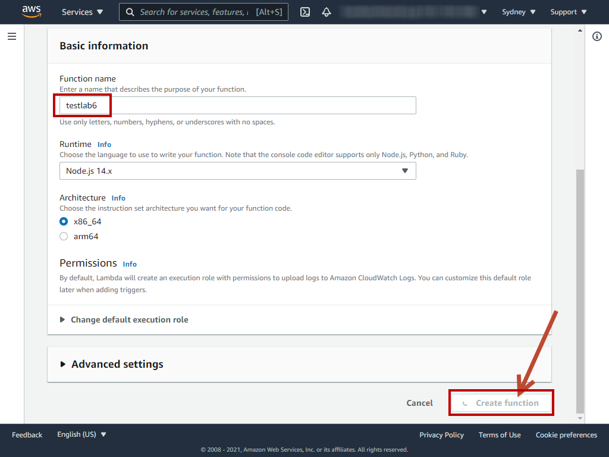
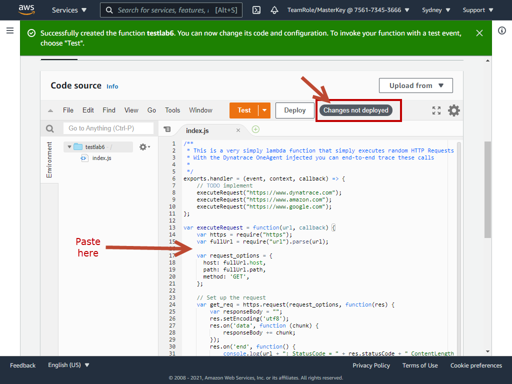
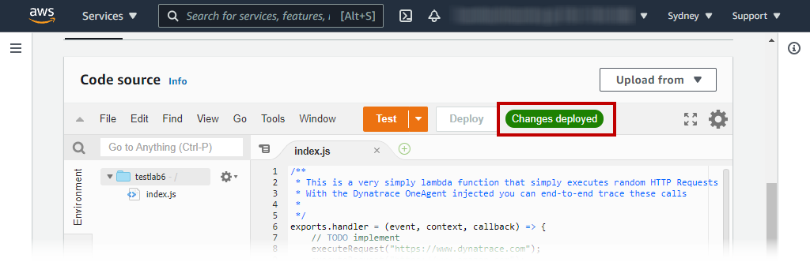
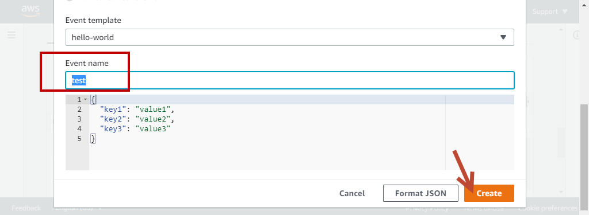

These additional labs were not covered in the hands on. However, you are free to try them on your own.
🔷 AWS Log forwarder
🔷 AWS Lambda code level instrumentation
Dynatrace leverages the Active Gate to ingest logs streamed from cloud providers. Follow the documentation instructions to install the Active Gate software in any Linux/Windows OS based instance if you don't already have one.
In this lab, we have pre-installed an Active Gate in the dt-orders-monolith Ubuntu EC2 instace and by default, the Active Gate reads the IP address assigned to the vNIC, which is an internal AWS IP address. The Active Gate configuration files allow us to change it to use a public facing IP address.
Setting up Active Gate
Extract the Public IP of the Active Gate
- As a metadata within Host View in Dynatrace, or
- execute this command
curl https://ifconfig.me;echo
Login to the command shell of your OS (assume Ubuntu bash shell here)
Edit the custom.properties file
sudo nano /var/lib/dynatrace/gateway/config/custom.properties
Add the following at the end of the file:
[connectivity]
dnsEntryPoint = https://PUBLIC_DOMAIN_NAME:9999
Remember to SAVE the config.properties file Restart Active Gate with the command
sudo systemctl restart dynatracegateway
Validate setting in Dynatrace
Open Dynatrace UI -> Deployment status -> Active Gates

We will use the AWS Log Forwarder from here

Deploying the Infrastructure
We will need to setup the AWS Infrastructure setup via running a Cloudformation script.
Open AWS CloudShell if it is already not started
Set the following environment variables in CloudShell. We recommend that you copy the text below to a text editor and amend the Placeholder values such as PUBLIC_DOMAIN_NAME and Managed_Environment_ID and TOKEN_NAME
TARGET_URL=https://<PUBLIC_DOMAIN_NAME>:9999/e/<Managed_Environment_ID>
TARGET_API_TOKEN=<your_API_token>
REQUIRE_VALID_CERTIFICATE=false
Download the script and deploy the infrastructure.
wget -O dynatrace-aws-log-forwarder.zip https://github.com/dynatrace-oss/dynatrace-aws-log-forwarder/releases/latest/download/dynatrace-aws-log-forwarder.zip \
&& unzip -qo dynatrace-aws-log-forwarder.zip \
&& ./dynatrace-aws-logs.sh deploy --target-url $TARGET_URL --target-api-token $TARGET_API_TOKEN --use-existing-active-gate true --require-valid-certificate $REQUIRE_VALID_CERTIFICATE

Create a Lambda function to test log ingest
For the purpose of sending logs, we will create a new Lambda function.
1. In the AWS portal, search for Lambda within the AWS Search Bar and go to Lambda
2. Click on Create Function

3. Use default option of Author from scratch
4. Give a Function name testlab6
5. We will create a nodejs function, leave everything else as default
6. Click on Create Function

7. Copy the following code and paste it in the index.js tab
/**
* This is a very simply lambda function that simply executes random HTTP Requests to a randomly selected group of URLs
* With the Dynatrace OneAgent injected you can end-to-end trace these calls
*
*/
exports.handler = (event, context, callback) => {
// TODO implement
executeRequest("https://www.dynatrace.com");
executeRequest("https://www.amazon.com");
executeRequest("https://www.google.com");
};
var executeRequest = function(url, callback) {
var https = require("https");
var fullUrl = require("url").parse(url);
var request_options = {
host: fullUrl.host,
path: fullUrl.path,
method: 'GET',
};
// Set up the request
var get_req = https.request(request_options, function(res) {
var responseBody = "";
res.setEncoding('utf8');
res.on('data', function (chunk) {
responseBody += chunk;
});
res.on('end', function() {
console.log(url + ": StatusCode = " + res.statusCode + " ContentLength: " + responseBody.length);
//callback(null, null);
});
});
// post the data
get_req.end();
}

8. Click on deploy to deploy the Lambda function and you will see a note Changes deployed

9. Click on test button (next to the deploy) to configure a "test" request the funciton.
10. Give any name you like for this test script
11. Click on create

12. Click on the orange test button again.
Once done, this Lambda function will create a log group. You can proceed to subscribe to the log group below.
Subscribe to log groups
- Back within the AWS Cloudshell, run the following command
./dynatrace-aws-logs.sh discover-log-groups > LOG_GROUPS_FILE - You see the discovered log groups with more LOG_GROUPS_FILE
- To subscribe, use the command below:
./dynatrace-aws-logs.sh subscribe --log-groups-from-file LOG_GROUPS_FILE
View Cloudwatch logs in Dynatrace
Back in Dynatrace, go to the new Log Viewer to see the new Log events from Cloudwatch logs

We can also instrument this function with Dynatrace as a Lambda extension
Instrumenting the Lambda function with Dynatrace
- In the Dynatrace menu, go to Hub, search for lambda, click on activate AWS lambda button at the bottom left part of the screen.
- Using Configure with environment variables, configure the function wtih Dynatrace instrumentation
- Select ap-southeast-2 region
- Copy and add environment variable to the function
- Go to the AWS portal, in the testlab6 lambda function screen, click on Configuration -> Environment variable
- Click on edit and copy the environment variables from Dynatrace
- Add Lambda layer ARN
- In the testlab6 lambda function screen, click on Code tab
- Scroll down to the section called Layers and click on Add a layer
- Choose Specify an ARN
- Copy the ARN value from Dynatrace
- Once configured, click on Test
- Filter on your aws.account.id
- Apply a filter for content with
REPORT RequestId:- This would reduce your search to only log events with RequestId
- Click on create metric
- Give a key
log.lambda - Click on Add dimension with the following:
- aws.region
- aws.resource.id
- aws.log_stream
- Click on Metrics on the left navigation panel
- Search for
Text:Logto locate the log metric - Click on create chart
- You can spilt Log metrics with various dimensions attached to it